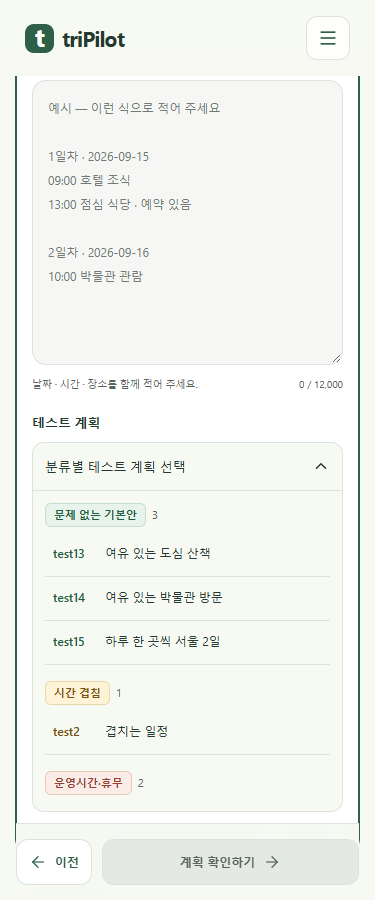

테스트 계획 기본안·분류 색
문제 상황을 넣지 않은 기본안 test13~test15를 추가했습니다. 기본안을 먼저 보여 주고 시간 겹침·운영시간·장소·이동·입력·일반 흐름을 색과 이름으로 구분합니다. 선택 후에도 분류가 남습니다.
실제 Chrome 촬영입니다. mock 서버 화면 시험 9/9, 로컬 입력·접수 시험 36/36을 통과했습니다. 준비된 입력에 대한 시험이며 실제 장소 조회 결과를 고정하지 않습니다. 공개 cs 프로젝트 서버에는 아직 반영하지 않았습니다.
375px · 기본안부터 선택
목록을 펼치면 화면 안으로 들어옵니다. 목록 안을 스크롤하면 다른 분류를 볼 수 있습니다.
